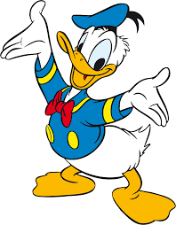

Donald "Fauntleroy" Duck
is one the characters is a famous Disney show called
Mickey Mouse

Donald Duck (or simply referred to as "The Duck") is an animated cartoon character created by Walt Disney as a foil to Mickey Mouse.Making his screen debut in The Wise Little Hen on June 9, 1934, Donald is characterized as a cocky showboat with a brash and juvenile personality. He is normally depicted wearing a sailor suit, cap and a bow-tie. Along with his semi-unintelligible voice (as famously created by his original voice actor, Clarence "Ducky" Nash), Donald's most dominant trait is his short temper, which is predominantly expressed through explosive outbursts and fits of quacking and squawking. Much of Donald's anger stems from his exceptionally bad luck, though his misfortunes are often the karmic result of his own arrogance and greed.
Donald garnered universal acclaim as early in his second appearance Orphan's Benefit and quickly became a mainstay in Disney's short films thereafter. His foibles endeared him to audiences, who found the duck's attitude and struggles to be both relatable and entertaining.Animators and artists were also fond of Donald Duck's stories, as the character was allowed to exhibit more negative traits that couldn't be bestowed upon Mickey or the happy-go-lucky Goofy.Beginning with 1937's Don Donald, Donald earned his own series of cartoons, which would introduce recurring characters, such as his girlfriend Daisy Duck, and his nephews Huey, Dewey, and Louie.
Having starred in over 190 films, Donald has appeared in more theatrical films than any other Disney character. Several of his cartoons were honored by the Academy Awards, while other notable accolades include a star on the Hollywood Walk of Fame and cemented footprints at the Chinese Theatre. Part of Donald's widespread popularity can be attributed to his long-running comic book series under the supervision of renowned artists, such as Ted Osborne, Al Taliaferro, Carl Barks, and Don Rosa. These stories depict Donald as living in the city of Duckburg and have been enjoyed by generations of readers on a global scale.
According to Don Rosa's timeline, Donald Duck was born in 1920. According to the cartoon Donald Gets Drafted (1942), Donald's full name is Donald Fauntleroy Duck (his middle name appears to be a reference to his sailor hat, which was a common accessory for "Little Lord Fauntleroy" suits). The Quack Pack episode "All Hands on Duck", the Legend of the Three Caballeros episode "Sheldgoose Square Dance" and Disney's website also stated his full name as Donald Fauntleroy Duck. Donald's birthday is officially recognized as June 9, 1934, the day his debut film was released, but in The Three Caballeros (and its subsequent spin-off), his birthday is given as simply "Friday the 13th", while in Donald's Happy Birthday, it is elaborated to be March 13th.